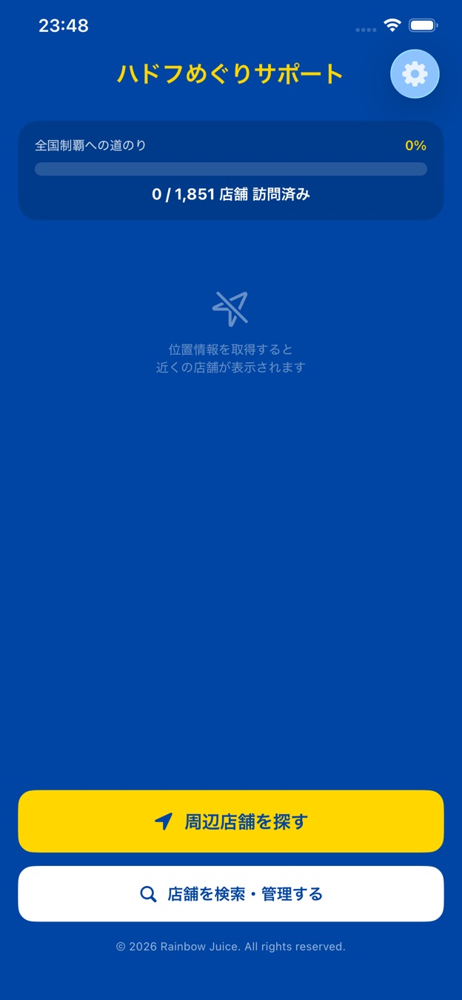
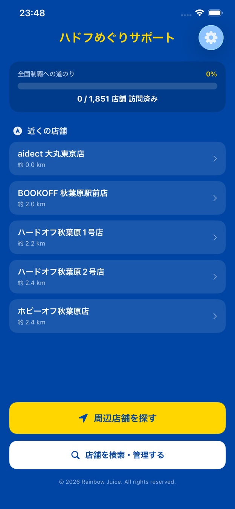

訪問を記録
訪問日時やメモを残し、巡った店舗を確認します。
App by Rainbow Juice
iPhone・iPad 対応ハードオフやブックオフなどの店舗を探し、訪問履歴を記録。近くのお店や次の行き先も見つけられます。

Features
ハードオフやブックオフなどの店舗を探し、訪問履歴を記録。近くのお店や次の行き先も見つけられます。
訪問日時やメモを残し、巡った店舗を確認します。
現在地からの距離や地域で店舗を探せます。
店舗情報から地図アプリでルートを確認できます。
Screens
アプリの主な画面を紹介します。表示内容はApp Store掲載時のものです。

Getting started
最初の操作を短くまとめました。
詳しい手順や各機能の説明は、はてなブログの使い方マニュアル ↗をご覧ください。